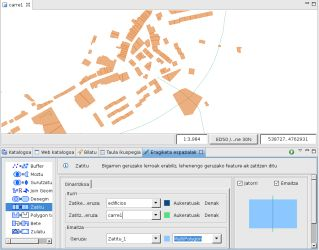
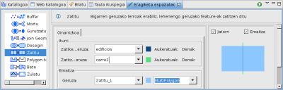
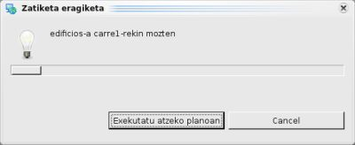
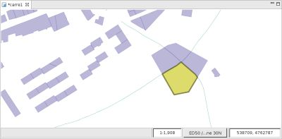

Poligono geruza bat zatitzen du LineString motako feature bat erabiliz
Zatitu eragiketak zatitzeko geruzaren featureak hartzen ditu eta zatitzaile geruza erabiltzen du featureak zatitzeko.
Zatitu eragiketaren emaitza geruza berri baten, dagoen baten edo zatitzeko geruza berean gorde daiteke.
Adibide honetan poligono motako edificios.shp geruzaren eta LineString motako carre1.shp geruzaren artean Zatitu eragiketa burutuko dugu.

1 Irudia. Eragiketaren aurretik.
Eragiketa Espazialen Bistara goaz, eta Zatitu aukeratuko dugu Eragiketen menuan.
Zatitu Eragiketaren aukera espezifikoak agertzen dira.
Eragiketaren sarrerako balioak adierazi behar ditugu, 2 irudian agertzen den bezala:

2 irudia. Sarrerako eta emaitzako geruzak zehaztu.

3 irudia. Aurrerakuntza leihoa.
Eragiketa bukatzen denean, emaitza gordetzeko geruza berri bat sotu bada, jadaneko Marpara automatikoki gehitua izango da.
4 irudiak sortu berri den Geruza (Zatitu_1) erakusten du Mapari gehitua, Jatorri eta Zatitzaile Geruzen arteko desberditasunak aplikatzearen emaitzako featurearekin.

4 irudia. Emaitza Geruza.
{kind=link}
{kind=link}
{kind=link}
{kind=link}